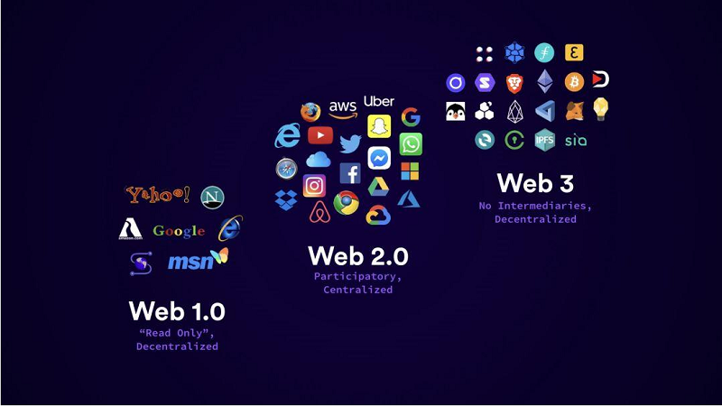

L'évolution du Web
L'évolution d'Internet a vu le Web passer d'une plateforme statique
de publication d'informations (Web1.0) à une plateforme interactive
centrée sur les utilisateurs (Web2.0), et maintenant à une plateforme
décentralisée et sécurisée basée sur la blockchain (Web3.0).
- Le Web1.0 était principalement un web statique, où les utilisateurs consommaient du contenu en naviguant sur des sites web qui étaient essentiellement des brochures en ligne. Ce web était axé sur la publication d'informations et les interactions étaient limitées. Cette période s'étendait du début des années 1990 jusqu'à la fin des années 2000.
- Le Web2.0 a émergé dans les années 2000 avec l'arrivée de la technologie AJAX et la possibilité pour les utilisateurs de participer activement en créant et partageant du contenu. Les sites web sont devenus des plateformes interactives avec des fonctions de partage, de commentaires, de vote, etc. Les réseaux sociaux ont explosé avec l'avènement de Facebook, Twitter, YouTube, etc. Cette période s'étend de la fin des années 2000 jusqu'au début des années 2020.
- Le Web3.0 est la prochaine évolution d'Internet qui se concentre sur la décentralisation, la sécurité et la personnalisation. Le Web3.0 utilise la technologie blockchain et les contrats intelligents pour permettre aux utilisateurs de contrôler leurs données et de créer des applications décentralisées. Cette période a commencé à émerger au cours de la dernière décennie et continue de se développer. Bien qu'il n'y ait pas de date précise pour le passage du Web2.0 au Web3.0, cette transition est en cours et devrait continuer à se faire sentir dans les années à venir.

C'est quoi le Web 3.0 ?
Le Web3.0 est une évolution du Web actuel qui vise à
créer une version plus décentralisée, sécurisée et personnalisée
d'Internet. Contrairement au Web2.0 qui est centré sur les entreprises
qui collectent les données des utilisateurs, le Web3.0 est basé sur la technologie blockchain et les contrats intelligents qui permettent aux utilisateurs de contrôler leurs propres données et de créer des applications décentralisées qui fonctionnent sans intermédiaires. En utilisant des protocoles de cryptographie avancés, le Web3.0 peut garantir la sécurité et la confidentialité des données tout en offrant une expérience personnalisée et transparente aux utilisateurs. En fin de compte,
le Web3.0 vise à créer un Internet plus juste et équitable pour tous.
Les variétés des technologies Web 3.0
Le Web 3.0 est la prochaine évolution du Web, qui vise à améliorer l'expérience utilisateur en offrant un Web plus intelligent, plus interconnecté et plus décentralisé. Le Web3.0 utilise une variété de technologies pour
atteindre ces objectifs, notamment :
- La blockchain:La blockchain est une technologie décentralisée qui permet de stocker des données de manière sécurisée et transparente. Elle est utilisée pour créer des applications décentralisées (dApps) et des contrats intelligents (smart contracts) qui fonctionnent
sans l'intermédiaire d'une autorité centrale
- Les identités numériques décentralisées:Les identités numériques décentralisées permettent aux utilisateurs de posséder et de contrôler leurs données d'identité en ligne, plutôt que de les laisser entre les mains des grandes
entreprises de technologie.
- L'intelligence artificielle:L'intelligence artificielle (IA) est utilisée pour améliorer les capacités de traitement des données et de
prise de décision des applications Web3.0.
L'influence des technologies du web 3.0 sur la tendance de 2023
La blockchain
La blockchain est une technologie décentralisée qui permet de stocker ....
En savoir plus

AI
L'intelligence artificielle (IA) est utilisée pour améliorer les capacités ....
En savoir plus